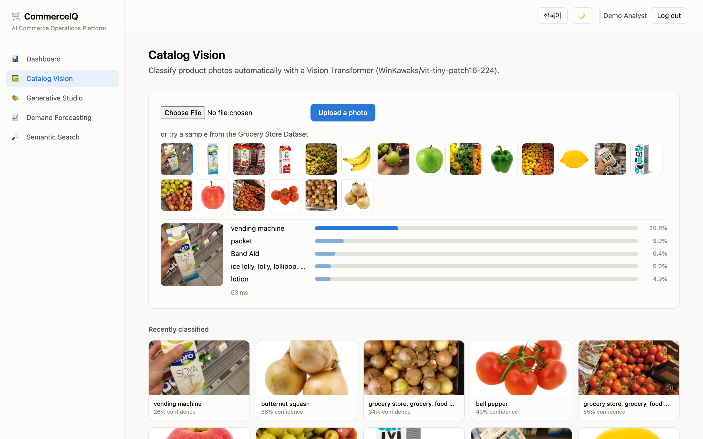
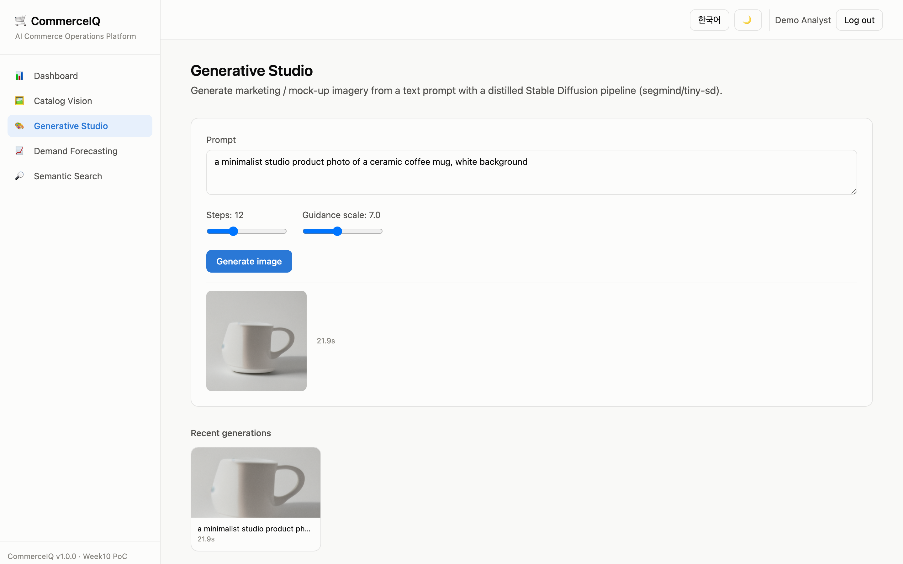
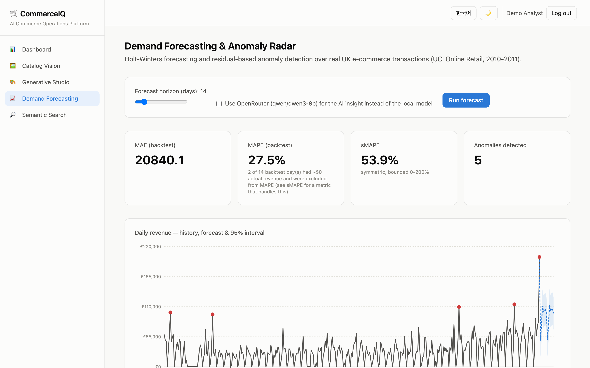
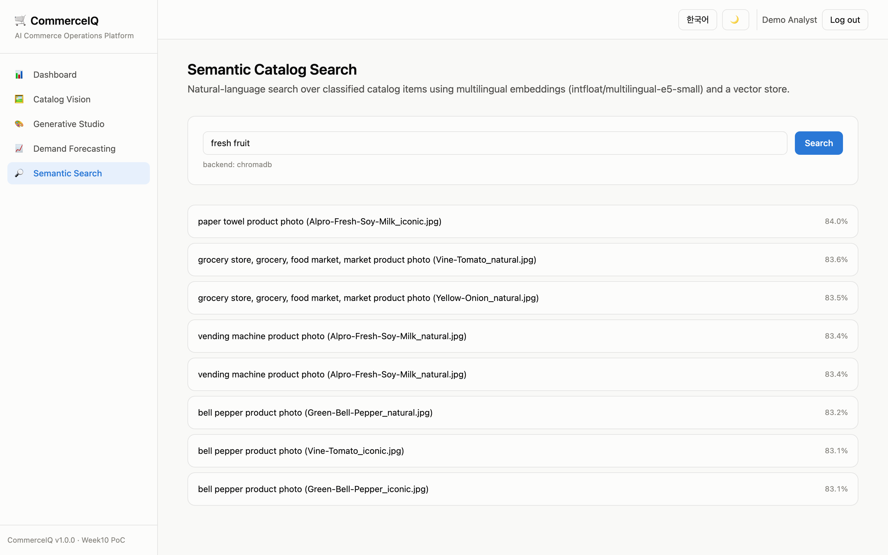
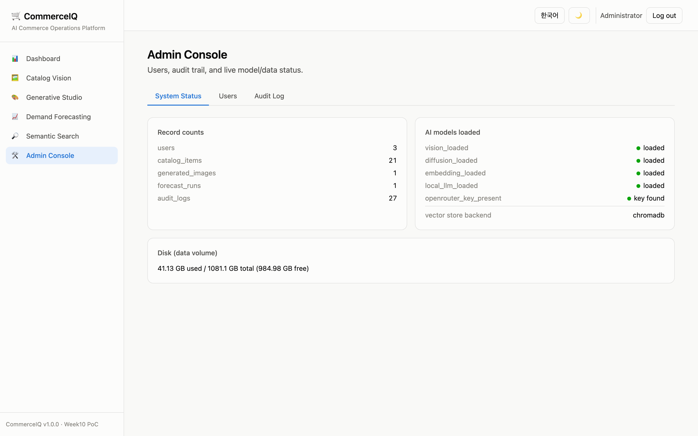
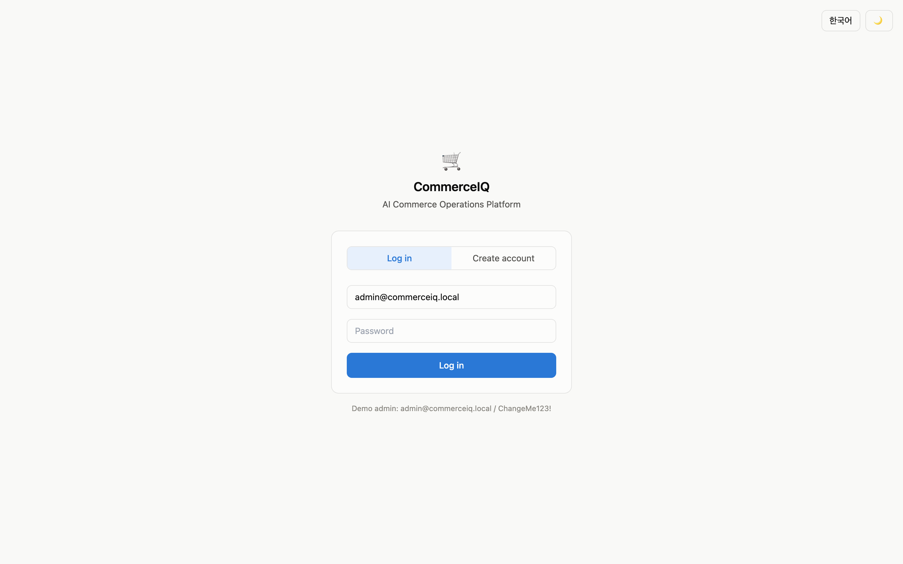

PoC · AI 커머스 운영 인텔리전스 플랫폼AI Commerce Operations Platform
CommerceIQ
CommerceIQ는 세 가지 AI 축 — Vision Transformer 이미지 분류, Diffusion 이미지 생성, 시계열 예측/이상탐지 — 를 하나의 상용 수준 제품으로 통합한 PoC입니다. 목적은 "여기까지 만들 수 있다"는 것을 실제로 보여주는 것입니다. CommerceIQ combines three AI pillars — Vision Transformer classification, diffusion image generation, and time-series forecasting/anomaly detection — into a single commercial-grade product, rather than three disconnected demos. The goal is to concretely show how far these techniques can go.
로컬 4개 + 옵션 클라우드 1개4 local + 1 optional cloud
TypeScript · Vite · Tailwind
Docker Compose, 자동 포트탐색auto port-detect
5개 AI 모델The five AI models
| 모델Model | 역할Role | 위치Location |
|---|---|---|
WinKawaks/vit-tiny-patch16-224 | 이미지 분류Image classification | local |
segmind/tiny-sd | 이미지 생성Image generation | local |
intfloat/multilingual-e5-small | 임베딩 / 시맨틱 검색Embeddings / semantic search | local |
Qwen/Qwen2.5-0.5B-Instruct | AI 인사이트 (기본)AI insight (default) | local |
qwen/qwen3-8b (OpenRouter)(via OpenRouter) | AI 인사이트 (옵션 업그레이드)AI insight (opt-in upgrade) | cloud, opt-in |
네 개의 로컬 모델이 기본 경로이며 API 키 없이 항상 동작합니다. OpenRouter 경로는 사용자가 명시적으로 선택할 때만 사용되며, 이번 빌드에서 실제 키로 검증했습니다 — 이 시리즈의 다른 제품들이 이미 쓰고 있는 "로컬 기본, 클라우드는 선택적 업그레이드" 하이브리드 패턴을 그대로 따릅니다.
The four local models are always the default path and work with zero API keys. The OpenRouter path is a strictly user-toggled upgrade, validated with a real key during this build — following the same "local default, cloud opt-in" hybrid pattern used elsewhere across this project series.
기능 둘러보기Feature Walkthrough
🖼️ 카탈로그 비전Catalog Vision
상품 사진을 업로드하거나 Grocery Store Dataset 샘플 20장 중 하나를 클릭하면, ViT-tiny가 즉시 Top-5 분류 결과와 신뢰도를 반환합니다.Upload a product photo, or click one of 20 Grocery Store Dataset samples, and ViT-tiny returns a top-5 classification with confidence scores in real time.

🎨 제너레이티브 스튜디오Generative Studio
텍스트 프롬프트만으로 마케팅/목업 이미지를 생성합니다. CPU에서도 완료되도록 tiny-sd(경량 증류 Stable Diffusion)를 사용하며, 생성은 백그라운드 잡으로 처리되어 UI가 멈추지 않습니다.Generates marketing/mock-up imagery from a text prompt alone, using tiny-sd (a distilled, lightweight Stable Diffusion) so it completes on CPU; generation runs as a background job so the UI never blocks.

📈 수요 예측 & 이상탐지 레이더Demand Forecasting & Anomaly Radar
실제 영국 이커머스 거래 데이터(UCI Online Retail)에 Holt-Winters 삼중지수평활을 적용해 일별 매출을 예측하고, 잔차 기반 방법으로 이상치를 탐지합니다. 예측 결과는 로컬 Qwen2.5-0.5B(기본) 또는 OpenRouter qwen3-8b(옵션)가 사람이 읽을 수 있는 인사이트로 요약합니다.Applies Holt-Winters triple exponential smoothing to real UK e-commerce transactions (UCI Online Retail) to forecast daily revenue, and flags anomalies via a residual-based method. The result is summarized into a business-readable insight by the local Qwen2.5-0.5B model (default) or OpenRouter's qwen3-8b (opt-in).

🔎 시맨틱 카탈로그 검색Semantic Catalog Search
분류된 카탈로그 항목을 다국어 임베딩(e5-small)과 벡터 스토어(Chroma)로 자연어 검색합니다. 한국어와 영어 질의 모두 지원합니다.Searches classified catalog items with natural language, using multilingual embeddings (e5-small) and a vector store (Chroma). Works with both Korean and English queries.

🛠️ 관리자 콘솔Admin Console
사용자 관리(권한/활성 상태), 모든 AI 호출의 감사 로그(누가/무엇을/어떤 모델/지연시간/성공여부), 실시간 모델·데이터·디스크 상태를 확인합니다.Manages users (role/active status), an audit log of every AI call (who/what/which model/latency/success), and live model/data/disk status.

🔐 로그인 / 회원가입Login / Sign-up

아키텍처Architecture
전체 시스템 다이어그램, 저장소 모델, 프로덕션 확장 다이어그램은 저장소의 The full system diagram, storage model, and production-scaling diagram also live in the repository's architecture.md 에도 동일하게 포함되어 있습니다 (GitHub에서 바로 렌더링됩니다). 아래는 핵심 시스템 다이어그램입니다.(renders natively on GitHub). The core system diagram is reproduced below.
flowchart TB
subgraph Client["Browser"]
SPA["React SPA (TypeScript / Vite / Tailwind)"]
end
subgraph Container["Docker container — commerceiq"]
API["FastAPI application (Python 3.11)"]
subgraph Models["AI models"]
VIT["① ViT-tiny — classification"]
SD["② tiny-sd — image generation"]
E5["③ e5-small — embeddings"]
QWEN["④ Qwen2.5-0.5B — local LLM"]
OR["⑤ qwen3-8b via OpenRouter (opt-in)"]
end
subgraph Storage["Storage"]
SQL[("SQLite")]
VDB[("Chroma vector store")]
end
API --> Models
API --> Storage
end
subgraph External["External (opt-in only)"]
ORAPI["OpenRouter API"]
end
SPA <-->|"HTTPS / JSON + JWT"| API
OR --> ORAPI
💡 다이어그램이 보이지 않는다면 인터넷 연결(Mermaid CDN)이 필요합니다. 오프라인에서는 저장소의 architecture.md / flowchart.md를 GitHub 또는 VS Code 미리보기로 확인하세요.
💡 If the diagram doesn't render, it needs an internet connection (Mermaid CDN). Offline, view the repository's architecture.md / flowchart.md on GitHub or in an editor preview instead.
왜 이 스택인가Why this stack
Streamlit이 아닌 FastAPI + React를 택한 이유, 단일 컨테이너로 유지한 이유 등 상세한 설계 근거는 The detailed reasoning behind choosing FastAPI + React over Streamlit, keeping everything in a single container, etc. is in architecture.md §2.
플로우차트Flowcharts
각 기능의 함수 단위 플로우차트는 저장소의 Per-feature, function-level flowcharts live in the repository's flowchart.md에 7개(인증, 카탈로그 비전, 제너레이티브 스튜디오, 수요 예측, 시맨틱 검색, 관리자 콘솔, 컨테이너 부트스트랩)로 정리되어 있습니다. 대표로 수요 예측 파이프라인을 아래에 재현합니다. as 7 diagrams (auth, catalog vision, generative studio, forecasting, semantic search, admin console, container bootstrap). The forecasting pipeline is reproduced below as a representative example.
flowchart TD
A["horizon_days, use_openrouter, lang"] --> B["POST /api/forecast/run"]
B --> C["ensure_online_retail_daily()"]
C --> D{"cached parquet exists?"}
D -- no --> E["download UCI zip -> parse xlsx -> filter -> resample daily -> cache"]
D -- yes --> F["load cached daily series"]
E --> F
F --> G["forecast.run_forecast()"]
G --> G1["Holt-Winters .fit()"]
G1 --> G2["backtest MAE/MAPE"]
G1 --> G3["seasonal_decompose -> anomalies"]
G1 --> G4["forecast + 95% CI"]
G2 & G3 & G4 --> H["result JSON"]
H --> I["llm.generate(system, user_msg, provider)"]
I --> J{"provider"}
J -- local --> K["Qwen2.5-0.5B-Instruct"]
J -- openrouter --> L["qwen/qwen3-8b via OpenRouter API"]
K --> M["business insight text"]
L --> M
M --> N["INSERT forecast_runs + audit_logs"]
N --> O["200 OK"]
하드웨어 최소 요구사항Minimum Hardware Requirements
| 최소Minimum | 권장Recommended | |
|---|---|---|
| RAM | 8 GB | 16 GB |
| 디스크 여유공간Free disk space | 10 GB | 20 GB |
| CPU | 4 코어cores | 8+ 코어cores |
| GPU | 불필요 — 모든 로컬 모델이 CPU에서 실행되도록 선택됨 (NVIDIA GPU가 있으면 자동 감지하여 CUDA 휠 사용)Not required — every local model was chosen to run on CPU (an NVIDIA GPU, if present, is auto-detected and used via the CUDA wheel) | |
| OS | macOS / Windows (Docker Desktop) / Linux | |
측정된 실제 컨테이너 메모리 사용량, 모델별 파라미터 수, 이미지 생성/예측 소요 시간은 Measured real container memory usage, per-model parameter counts, and generation/forecast timing are recorded in ../../../history/v1.0.0.md.
빠른 시작Quick Start
cd week1/PoC/projects/commerceiq ./scripts/setup.sh # 최초 1회: 이미지 빌드, 빈 포트 탐색, 컨테이너 시작# first time: build image, find a free port, start container ./scripts/run.sh # 이후 재시작# subsequent restarts ./scripts/stop.sh # 컨테이너 정지 (삭제 아님)# stop without deleting ./scripts/verify_e2e.sh # 전체 end-to-end 검증# full end-to-end verification ./scripts/download_models.sh # (옵션) CLI로 4개 로컬 AI 모델 강제 다운로드/검증# (optional) force-download/verify all 4 local AI models via CLI ./scripts/download_data.sh # (옵션) 공개 데이터셋 2종 강제 재다운로드# (optional) force-refresh the 2 public datasets
모델 다운로드를 포함한 모든 설치·실행 과정은 오직 셸 스크립트로만 이루어집니다 — UI 클릭이나 수동 docker exec가 전혀 필요 없습니다. setup.sh/run.sh가 이미 백그라운드에서 모델을 자동 다운로드하며, download_models.sh는 그 과정을 명시적·동기적 CLI 명령으로 노출한 것입니다.
Every install/run step — including model downloads — is driven entirely by shell scripts, with no UI clicks or manual docker exec required. setup.sh/run.sh already download models automatically in the background; download_models.sh just exposes that same step as an explicit, synchronous CLI command.
데모 관리자 계정: Demo admin account: admin@commerceiq.local / ChangeMe123!
⚠️ Windows에서는 Git Bash 또는 WSL2에서 이 스크립트들을 실행하세요 (이 프로젝트 시리즈의 다른 env_set_up.sh/run.sh와 동일한 관례입니다).
⚠️ On Windows, run these scripts from Git Bash or WSL2 — the same convention already used by this project series' other env_set_up.sh/run.sh scripts.
API 개요API Overview
FastAPI는 자동 문서를 제공합니다: 컨테이너 실행 중 FastAPI provides automatic docs — while the container is running, visit http://localhost:<port>/docs
| Endpoint | 설명Description |
|---|---|
POST /api/auth/signup · /login · /logout · GET /me | JWT 인증 (쿠키 또는 Bearer)JWT auth (cookie or Bearer) |
GET /api/vision/samples · POST /classify · /classify-sample/{f} | 이미지 분류Image classification |
POST /api/generate · GET /jobs/{id} · /gallery | 이미지 생성 (백그라운드 잡)Image generation (background job) |
POST /api/forecast/run · GET /datasets · /runs | 수요 예측Demand forecasting |
POST /api/search · GET /status | 시맨틱 검색Semantic search |
GET /api/admin/users · /audit-log · /system · PATCH /users/{id} | 관리자 전용Admin only |
검증Verification
모든 검수는 All verification runs via backend/verify_e2e.py를 통해 실행 중인 컨테이너에 실제 HTTP 요청을 보내 검증합니다 (모킹 없음). 헬스체크 → 4개 로컬 모델 워밍업 대기(/api/health/ready) → 회원가입 → 인증 → 이미지 분류(업로드/샘플) → 이미지 생성(잡 제출·폴링) → 예측 실행(AI 인사이트 포함) → 시맨틱 검색 → 일반 사용자의 관리자 접근 차단 확인 → 관리자 접근 확인까지 총 12단계입니다. 실제 실행 결과는 — real HTTP requests against the live container, no mocking. 12 steps: health check → wait for all 4 local models to warm up (/api/health/ready) → signup → auth → image classification (upload + sample) → image generation (submit + poll) → forecast run (incl. AI insight) → semantic search → confirm a regular user is blocked from admin → confirm an admin can access it. Actual run output is recorded in ../../../history/v1.0.0.md.
데이터 & 라이선스Data & Licenses
| 데이터셋Dataset | 출처Source | 라이선스License | 용도Used for |
|---|---|---|---|
| UCI Online Retail | archive.ics.uci.edu/dataset/352 | CC BY 4.0 | 수요 예측Demand forecasting |
| GroceryStoreDataset (sample) | github.com/marcusklasson/GroceryStoreDataset | MIT | 카탈로그 비전 데모Catalog Vision demo |
전체 인용 정보와 직접 다운로드 링크는 Full citations and direct download links are in data/SOURCES.md.
기초 지식 & 참고문헌Foundational Knowledge & References
Vision Transformer
이미지를 16×16 패치로 잘라 "단어"처럼 취급하고, 셀프 어텐션으로 패치 간 관계를 학습합니다.Cuts an image into 16×16 patches, treats each as a "word," and learns relationships between patches via self-attention. — Dosovitskiy, A. et al. "An Image is Worth 16x16 Words." ICLR 2021. arxiv.org/abs/2010.11929
Latent Diffusion / Stable Diffusion
노이즈를 점진적으로 제거하도록 학습된 모델이 텍스트 조건에 따라 이미지를 생성합니다. VAE로 압축된 잠재공간에서 동작해 계산량을 크게 줄입니다.A model trained to progressively remove noise generates images conditioned on text, operating in a VAE-compressed latent space to cut compute cost dramatically. — Rombach, R. et al. "High-Resolution Image Synthesis with Latent Diffusion Models." CVPR 2022. arxiv.org/abs/2112.10752
Holt-Winters 지수평활Exponential Smoothing
수준(level)·추세(trend)·계절성(seasonality) 세 성분을 각각의 평활계수(α, β, γ)로 추정하는 고전적 시계열 예측 기법입니다.A classic forecasting technique estimating three components — level, trend, seasonality — each with its own smoothing coefficient (α, β, γ). — Winters, P.R. "Forecasting Sales by Exponentially Weighted Moving Averages." Management Science, 1960.
E5 임베딩Embeddings
Wang, L. et al. "Text Embeddings by Weakly-Supervised Contrastive Pre-training." 2022. arxiv.org/abs/2212.03533
더 자세한 모델 카드와 용어집은 Fuller model cards and a glossary are in ../../../etc/glossary.md.
상용/클라우드 확장 시 고려사항Production & Cloud Scaling
이 PoC는 의도적으로 단일 컨테이너·단일 호스트로 동작합니다. 실제 상용 배포 시 바뀌는 부분은 This PoC intentionally runs as a single container on a single host. What changes for a real commercial deployment is detailed in architecture.md §5에 표로 정리되어 있습니다 (앱 계층 다중화, 관리형 Postgres, 관리형 벡터DB, Redis/Celery 작업 큐, 오브젝트 스토리지+CDN, GPU 노드풀, 시크릿 매니저, 관측성). (app-tier replication, managed Postgres, a managed vector DB, a Redis/Celery task queue, object storage + CDN, a GPU node pool, a secret manager, observability).
추정 월 운영비용Estimated monthly operating cost
(일일 활성 사용자 약 500명, 전체 기능 합산 하루 약 5,000회 AI 호출 가정 · 2026년 8월 기준 공개 정가 참고치 — 실제 예산 수립 전 최신 가격을 반드시 재확인하세요)(assuming ~500 daily active users, ~5,000 AI calls/day across all features · indicative public list prices as of Aug 2026 — always re-check current pricing before budgeting)
| 항목Item | 가정Assumption | 월 예상 비용Est. monthly cost |
|---|---|---|
| 앱 호스팅App hosting (Cloud Run/Fargate, 2 vCPU/4GB) | 1–2 인스턴스, 상시구동instances, always-on | $70–140 |
| 관리형 PostgresManaged Postgres | 1 인스턴스 + 백업instance + backup | $60–90 |
| 벡터 DBVector DB | pgvector 또는 Pinecone starteror Pinecone starter | $0–50 |
| 오브젝트 스토리지 + CDNObject storage + CDN | ~50GB, 중간 egressmoderate egress | $10–25 |
| GPU 버스트burst (diffusion) | ~20 GPU-시간hours/mo | $15–30 |
| OpenRouter (qwen3-8b, 옵션opt-in) | ~150k tok/day | $10–25 |
| 모니터링Monitoring | 기본 티어basic tier | $0–20 |
| 합계 (참고치)Total (indicative) | ≈ $165–380 | |
배포 시 고려사항Deployment Considerations
- 환경 일치: 로컬에서 쓰는 동일한
docker/Dockerfile을 그대로 배포에 사용하세요.Environment parity: deploy the exact samedocker/Dockerfileused locally — no separate "prod" Dockerfile. - 시크릿:
api_keys/*.md파일 마운트 방식을 대상 플랫폼의 시크릿 매니저로 교체하세요.Secrets: replace theapi_keys/*.mdfile-mount convention with the target platform's secret manager. - DB 마이그레이션:
DATABASE_URL을 Postgres로 교체하고 alembic으로 스키마 마이그레이션을 추가하세요 (현재는 SQLite 단일 writer를 가정한create_all방식).DB migration: switchDATABASE_URLto Postgres and add alembic migrations (the PoC'screate_allassumes a single SQLite writer). - CORS: 현재
allow_origins=["*"]는 SPA와 API가 같은 오리진이라 가능한 설정입니다 — 분리 배포 시 실제 프론트엔드 오리진으로 제한하세요.CORS: currentlyallow_origins=["*"]because the SPA and API share an origin — restrict this once they're split across a CDN/subdomain. - 모델 메모리: 레플리카마다 4개 로컬 모델을 각각 메모리에 올립니다 — 대규모 확장 시 공유 추론 서비스 구조를 고려하세요.Model memory: each replica loads its own copy of all 4 local models — consider a shared inference service at larger scale.
- 속도 제한: 이 PoC에는 없습니다 — 특히 이미지 생성/OpenRouter 엔드포인트는 실제 한계비용이 있으므로 사용자별 rate limit이 필요합니다.Rate limiting: not implemented in the PoC — needed per-user, especially on the generation and OpenRouter-backed endpoints, which carry real marginal cost.
한계 & 로드맵Known Limitations & Roadmap
- ViT-tiny는 커스텀 소매 카테고리가 아닌 범용 ImageNet-1000 클래스로 분류합니다 — "바나나"·"레몬"·"피망"처럼 ImageNet에 정확히 대응하는 클래스는 잘 맞지만, 우유팩·요거트 용기처럼 ImageNet에 없는 포장 상품은 그럴듯하지만 틀린 라벨(예: "자판기")을 반환합니다. 실측 데이터는
../../../history/v1.0.0.md참조. 실제 카탈로그에는 소매 카테고리로 파인튜닝된 분류기가 필요합니다.ViT-tiny classifies into generic ImageNet-1000 classes, not custom retail categories — items with an exact ImageNet match ("banana," "lemon," "bell pepper") classify well, but packaged goods without one (milk cartons, yogurt tubs) get a plausible-but-wrong label (e.g. "vending machine"). See../../../history/v1.0.0.mdfor real measured examples. A production catalog would need a classifier fine-tuned on real retail categories. - CPU에서 이미지 생성은 초당 아닌 수십 초 단위입니다 — 프로덕션은 GPU 노드 필요.Image generation on CPU takes tens of seconds, not seconds — production would need a GPU node.
- OpenAI/Claude/Gemini 프로바이더는 설정만 되어 있고 이번 라운드에는 검증되지 않았습니다 (
ml/llm.py참고).OpenAI/Claude/Gemini providers are scaffolded but not validated this round (seeml/llm.py). - 속도 제한, 이메일 인증, 비밀번호 재설정은 PoC 범위 밖입니다.Rate limiting, email verification, and password reset are out of scope for this PoC.
전체 버전 이력은 Full version history is in ../../../history/.